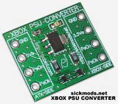
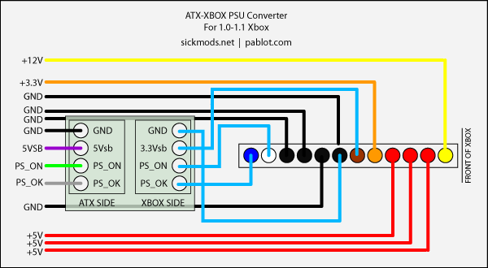
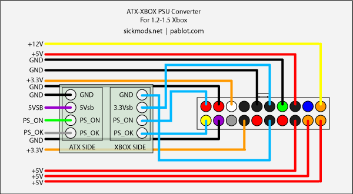
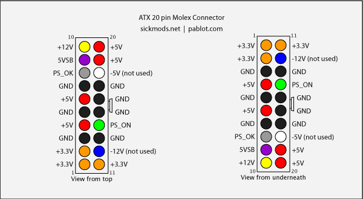

ATX to XBOX POWER ADAPTER (V1.0 & V1.2
/ V1.2 to V1.5)
ATX to Xbox PSU Converter v1.0!!
http://sickmods.net/index.php?site=PSU-Converter

This device will allow you to use ATX Power Supplies to power up your
Xbox version 1.0-1.5. This is a great feature for casemodders who have
their Xbox in a different case, such as a PC case. You'll be able to
power it up using the
Xbox's power button like normal.
You can also buy the ATX headers for the board so you can plug the PSX
supply into the board, then plug the board into the Xbox Motherboard!
NICE ADAPTER! This saves you from soldering wires or making your own.
ADAPTER WIRING DIAGRAMS:
Wire colors may vary between power supplies. The location of the wires
is what is important. The red LED will light up when the
Converter is receiving power from the PSU.
V1.0 & V1.1 DIAGRAM

V1.2 TO V1.5

ATX SUPPLY WIRING DIAGRAM

Notes: +5Vsb is the continous voltage from the ATX PSU, that is
reduced to +3.3Vsb at the
adapter. This keeps Xbox date & Time. It is also known
as the 5Volt Rail - for devices
connected to USB ports that may get/need power with the PC
off. With the Xbox, it
is simply converted down to the 3.3 it requires for the Date and Time.